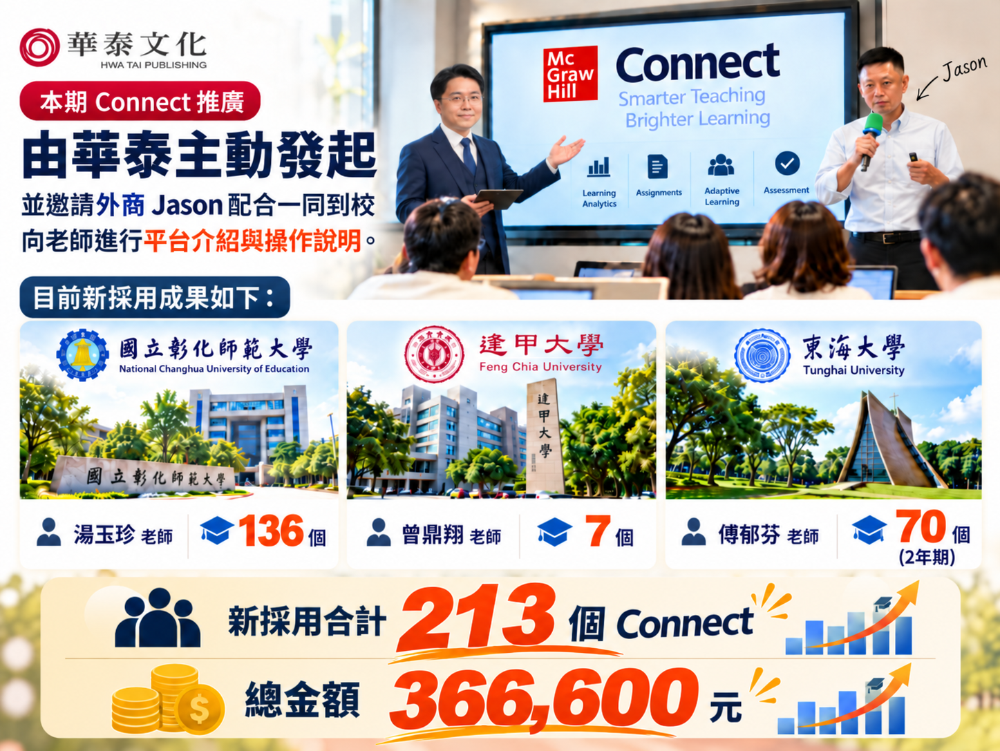
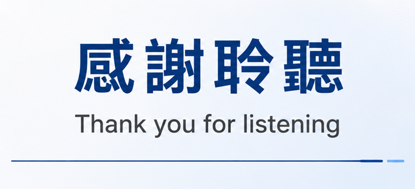

延用之後，持續追蹤採用需求
將授權期間與後續課程安排納入討論，持續確認新班級的採用與使用情況。
業務推廣經驗分享
從一次拜訪，
走進一門課。
從三校採用經驗出發，分享如何釐清需求、
安排示範，並把合作接續到真實課堂。
到班推廣、兩年期授權與小量採用，
從各自的教學情境，找到推廣切入點。
採用量可由三校加總核對。
營收依原簡報結尾成果圖列示。
從介紹一本書，
延伸到理解
一門課的安排。
原稿提出從「賣書業務」走向「數位顧問」的思考。實際推廣時，將討論落在教材選擇與使用方式，讓老師能判斷平台是否適合自己的課程。
將授權期間與後續課程安排納入討論，持續確認新班級的採用與使用情況。
依課程需要討論紙本加平台、平台方案或電子書，清楚說明各自的內容與費用。
從一個章節的示範開始，確認任務設定與成績處理方式，再討論校端串接需求。
安排 Jason 到校或視訊前，
先提供教材與需求摘要。
每次拜訪都留下可確認的下一步。
| 參與者 | 建議工作 | 需要留下的結果 |
|---|---|---|
| 華泰業務 | 需求訪談與後續聯繫 | 課程背景與下一步 |
| Jason | 平台介紹與操作支援 | 對應書籍及章節的示範 |
| 老師 | 評估課程安排 | 想進一步確認的事項 |
分工依每次拜訪的參與者與支援範圍調整。來源：原簡報第 8 頁。
說明該課程可選方案的內容與費用，確認電子書與練習內容的範圍，讓老師能評估學生負擔。
事先確認帳號開通、建課與學期初支援的範圍。由華泰接續聯繫，再安排需要的原廠操作支援。
先確認校端使用的系統與權限，再示範實際可用的成績匯出方式。串接與回寫流程依學校環境確認。
依原簡報第 4、7、8 頁及第 9 頁講者筆記整理。
兩支影片皆擷取自原始簡報，
一支面向老師，一支面向學生。
點擊後播放，保留原始聲音與內容。
原簡報第 5 頁，將平台介紹作為拜訪時的開場素材。
原簡報第 6 頁，面向學生的推廣素材。
從到班、到校到三方視訊，
三個案例各有不同的推廣節點。
點選學校，查看做法與後續追蹤。
從原稿列出的追蹤事項出發，
把本期成果接到老師與學生的使用回饋。
期中考上機考的使用情況與回饋
評量使用授權期間與跨學期的使用安排
授權安排學生使用 Connect 與 VitalSource 的回饋
學生回饋原簡報第 12 頁列為優先追蹤事項，並非已完成的成效評估。
攜手外商擴大校園巡迴，
深耕大專院校數位教學。
將原簡報的規劃列為後續推廣方向。
結尾成果圖列示總金額 366,600 元。
保留原稿的完整成果圖與感謝聆聽圖片，
作為本次分享的收束。

